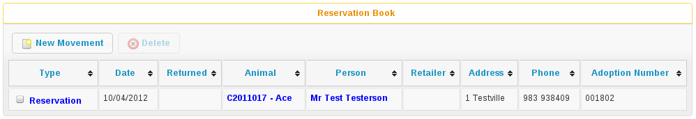

6 Reservation Book
The Reservation Book is a useful screen that ties together animals, owners and reservation movement records. It allows you to see all the animals on the shelter that are currently reserved at a glance. You can also directly edit the movement records and jump straight into the animal or owner record.
The reservation book is located under the Move menu.

To add a new reservation, click the New Movement button. The standard movement screen will appear as if you were in an animal or owner record, however you must choose both the animal and owner at the top of the screen.
You can also use Move->Reserve an animal to create a reservation through the normal workflow. If you do this, you'll need to refresh the reservation book to see your change.
6.1 Other Books
There are also additional screens called the Foster Book, Retailer Book and Trial Adoption book which look and work exactly like the reservation book. The only difference is that the animals listed are currently on foster (or at retailers, or trial adoption) instead of reserved.